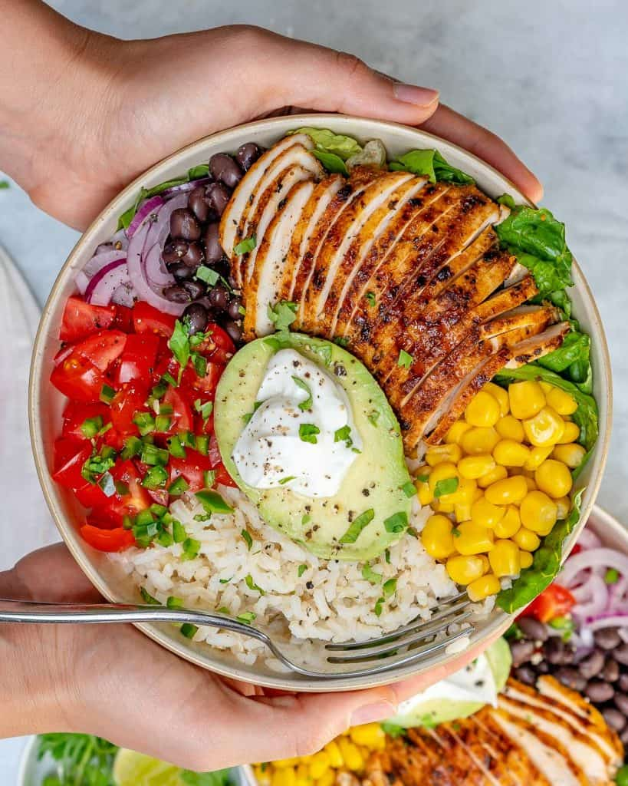

Grilled Chicken Burrito Bowl

Description
Feeling like a burrito, but don't want to go to Chipotle? Try this burrito
bowl with grilled chicken. Not only does it taste good, it's also relatively
cheap to make and healthy.
Ingredients
- Chicken breast
- Cooked brown or white rice
- 1 lime(or lemon)
- 1 avocado
- Bag of mixed greens
- 1 can black beans or pinto beans
- 1 can corn
- Carton of cherry or grape tomatoes
- 1 onion
- Sour cream
- Salt and pepper
- 1 tbsp olive oil
- 1 tsp paprika
- 1 tsp ground cumin
- 1 tsp chili powder
- 1 tsp garlic powder
- 1 tsp oregano
Steps
- Mix olive oil, paprika, cumin, chili poweder, garlic powder and
oregano in a ziploc bag. Add a squeeze of lime and salt and pepper to
taste.
- Put chicken in ziploc bag with seasoning and shake until chicken is
covered evenly.
- Grill chicken on medium-high heat for 5-7min on each side, or until
cooked through and no longer pink on the inside.
- Let chicken sit 5 min. Then slice.
- Cut tomatoes in half.
- Drain corn and beans.
- Slice onion.
- Add mixed greens and rice to either side of bowl.
- Top with tomatoes, corn, beans, and onion.
- Added sliced chicken to the top with a dollop of sour cream.
- Add a squeeze of lime, and some salt and/or pepper to your liking.